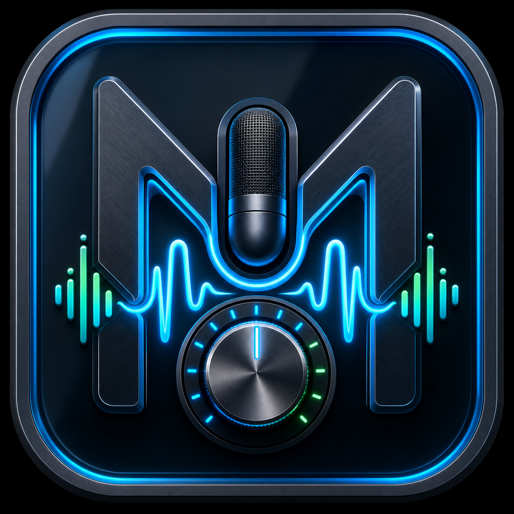
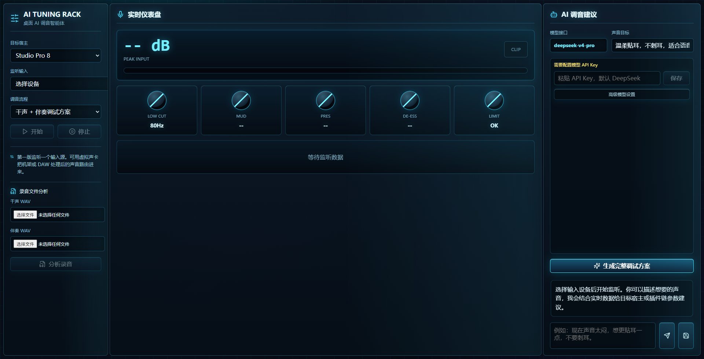

Analyze Singing Takes
Upload a dry vocal WAV and a backing WAV, then let the app estimate tone, dynamics, clarity, sibilance, and vocal-to-backing balance.

Mency AI Tuning RackA desktop AI tuning agent for singers and home studios. Upload dry vocals and backing tracks, or monitor live playback, then generate a practical plugin-chain plan for your DAW.
Mency does not replace your ears. It gives you a structured starting point so you can tune faster and make clearer decisions.
Upload a dry vocal WAV and a backing WAV, then let the app estimate tone, dynamics, clarity, sibilance, and vocal-to-backing balance.
Generate a professional-style workflow covering cleanup, tuning, EQ, compression, de-essing, saturation, ambience, and final checks.
DeepSeek is the default setup, but any OpenAI-compatible provider can be used by entering Base URL, model name, and API key.
The interface is designed for fast scanning while you are working inside a DAW.

Installer SHA256:
A8696A3CFA3A5D2FCB508866A3951E2F0A851CDD61F4587AC649208A45664593
Portable ZIP SHA256:
C5813D1020902C837A91F536DF3D8B06DABDA55A8BD2F70A7CCACA820D23D5E1
Use the installer for the normal Windows experience, or the ZIP for portable use.
Download `Mency-AI-Tuning-Rack-Setup-0.1.0.exe` from this page or the GitHub release.
Run the installer and choose the install location. Windows may show an unsigned-app warning.
Launch Mency AI Tuning Rack from the desktop shortcut or the Start Menu.
Start with uploaded WAV files if you are new. Use real-time monitoring when your audio routing is ready.
Upload a vocal-only WAV and the matching instrumental WAV. This is the most reliable beginner workflow and gives the clearest analysis input.
Select an input device and play audio from your DAW or rack. If the app cannot hear your DAW, use loopback, a virtual audio cable, or the upload workflow.
The public package does not include a paid API key. Every user enters their own.
Base URL: https://api.deepseek.com
Model: deepseek-v4-pro
Open the advanced model settings and enter your provider's Base URL, model name, and API key.
Your key is saved only on your own computer. The GitHub repository and release package include only an empty `.env.example` template.
Short answers for the questions most new users will have.
Yes. This preview build is not code-signed yet, so Windows may show a warning. Download only from the official GitHub release link on this page.
No. The public package does not include any paid API key. You need to enter your own key before model features can work.
Not in this preview. It gives plugin-chain and parameter suggestions that you apply manually in Studio One, Cubase, FL Studio, Ableton Live, or another DAW.
Use the dry vocal plus backing track upload workflow. It avoids audio routing issues and is the easiest way to get a useful first tuning plan.